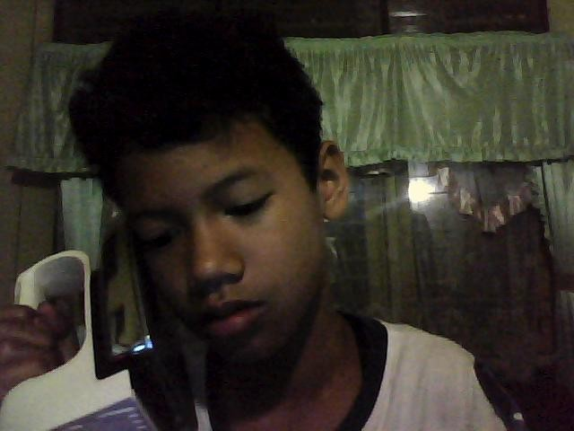

|  |
BIODATA SAYAMUHAMMAD RIZQY ATH-THAARIQlahir di Samarinda kota yang dibelah sungai Mahakam.Yang ingin bercita-cita menjadi seorang PROGRAMER.Dari sejak TK sudah mengetahui apa itu komputer Menyukai semua hal yang berkaitan teknologi, khususnya tentang digital. Looping Teroos Sampai Berhasil |